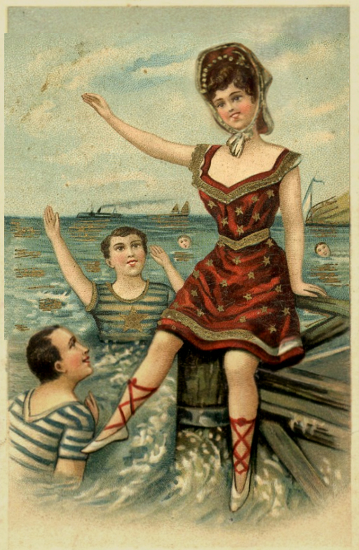

Hover for Companion tunes
Hover for Companion tunes

Bloomin'
Biting wind gives way to a mild chill. Coats give way to sweaters give way to rolled up sleeves and tees. Washington comes alive as the pent up angst built up over Winter explodes throughout the city – joyous picnics, outdoor brunches, crowded trails and bike lanes.
Thousands of trees bloom flowers all over the city, a natural invitation to venture outdoors.
Over the past year, I’ve been working on a map of the most celebrated and beautiful of those heralds – D.C.’s Cherry Blossoms.
For the first time, prints of the map are now available to bring a little bit of that joyful energy and beauty into your home.
This project marks a buncha firsts for me – first time I’ve ventured into producing fine art prints, first time that I’m trying to sell personal work on a large-ish scale, and the time first that I’ve realized one of the many “decorated data-viz” maps I’ve dreamt of making.
For more info than most readers could want on how the project came together, read on! (and then order a print!)
1.
This sprouted from a brainstorm on DC-based phenomenons I could map.
A Google search had me thinking no one had done a nice density map of where the cherry blossom clusters were. Lots of great here’s all the trees”, basin-focused detailed maps, or less data-driven ones of DC surrounded by flowers.
It would be months and months later I discovered someone did beat me to this punch! Wrecked by Hannah Recht. Luckily I’d only find that out after making decent headway into my own map.
Subject matter decided, the style came together inspired by some favorite art styles. Namely, Japanese woodblock prints. There’s something gorgeous about the delicate layers of color, the faint emboss created by the blocks pressing into the paper, and that the scenes depicted are often mundane scenes of life, portraits, and nature.
It’s thanks to Japan that we have these trees to begin with. DC journalist, and big ol’ fan of Japan, Eliza Ruhamah Scidmore spent a quarter century badgering city officials to import them. In the early 20th century a few rich folks did, and after being pleased with the results, Japan agreed to gift a couple thousand to the city.
Those trees showed up infected and were destroyed.
Undeterred, the city secured a second donation in 1912, and those are the ones that’ve stuck around. Over the years DC has gifted back flowers and buds while Japan has gifted yet more trees, and a pearl crown.
In 1954, Japan also gifted something else special: a granite lantern that sits south of where the reflecting pool starts. Carved in 1651 for the passing of the shogun Tokugawa Iemitsu For anyone who watched or read Shogun, he’s only one shogun separated in lineage from Tokugawa Ieyasu . It sat along with it’s twin in Toyko for 300 years.
All to say, the history of these trees is as engrossing as the trees themselves. Beauty that’s untethered by a price of admission, diplomacy in a gift of one-week spectacle. Something everyone Even allergy havers. Don’t make me take off these cherry-rose tinted glasses! enjoys.
While not woodblock prints, Kōkichi Tsunoi’s watercolors were another source of inspiration. I don’t think anyone else has captured the indivudal flowers as well.
The final major inspiration came from Caroline van H. Bean:
It’s gorgeous! It’s a little distracting with prominent DC buildings (and 20-miles-further-south Mt. Vernon), but so much to love. The script labels! The colors!
Hard to tell without comparing it to the real geography of the basin, but this map also cleverly distorts and manipulates Hains Point so as to center it on the Washington Monument.
2.
Typically for projects I go pencil sketch → digital rough → painting → digital finish. Pencil and paper is loose and quick for the broad plan. Photoshop then lets you move all the elements in their own layer and manipulate as need be to figure out what works.
For this one, the layout settled mentally early enough that I started in Photoshop.
DC’s diamond shape naturally leaves a lot of room to work with, and splitting it into three pseudo views of the blossoms felt right. Also inspired by woodblock prints, of which many famous ones come from small series where the artist would do ‘One Hundred Views of Mount Fuji’, or ‘Thirty-six Views of Mount Fuji’ A focus on a branch of flowers in the sky, the basin, and the lantern. Sunrise, sunset and twilight. Air, water, earth.
In a ring around the map, initially thought of showing the life cycle of a cherry blossom, but landed on using that for showcasing the varities. The life cycle then moved into the four “leftover” panels, cuts I added to give an anchor and guide the eyes along.
Core map was made in QGIS with data from Casey Trees. The top and bottom were based on photos I took in 2024 - the top a flowering branch of one of the only nine trees remaining from the original 1912 gift. The bottom the lantern at it’s home on the basin.
Forcing the perspective to mix a top-down view of basin along with a skyline view of D.C. and forcing the Washington monument and capitol building in those places was fun challenge. Van H. Bean’s work served as a north star, an assurance that it can work.
The detail of the flowers in the top and bottom section took awhile to land on. Initially each flower was drawn, but I started to worry about that looking too “heavy”. Likewise thought about making the bottom outline-free, relying on the contrast against the twilight sky to create the shapes, but kept the outline for consistency at first.
Knew the color scheme I wanted it to be from the get go iykyk  , but still weighed options:
3.
Printed that out at the intended 11”x17” size, taped it to the back of an arches hot press, and began to paint.
Nailed what I was going for with the colors, but doing it actual size meant getting fine details in there was a pain. The black outlines on the trees on the top and bottom also much too heavy once drawn on.
With a heavy heart, put the project aside for a month or two before trying again.
Taking it back up, round two I painted the dang thing out at twice the size, roughly 21”x30”.
4.
I hear you - why go through the effort of painting this if you’re just going to touch it up considerably in Photoshop afterwards?
Practically, using pens instead of a pen tool adds a consistency I find hard to get with digital tools. You’re locked into the widths you can get with your pen, the colors your inks will combine into, the minor mistakes you make when you sneeze drawing a curve.
That said, some mistakes aren’t so minor. Getting colors “right” is hard, and to make reproductions the thing will have to be digitized anyway. Actually painting the thing starts me off on such a better foot for it.
Biggest bug to me was that for the larger painting, I screwed a lot of the colors. Background peach turned out great - but the life cycle panel color went on way too dark, and the central map reds just didn’t have a great distinction.
Also accidentally wrote “…in 1/10 miles areas in beautiful…” We all need copy editors in our lives.
5.
I finished the touch ups at 3pm on the first day of peak bloom. By 4pm I was at my local fedex getting it printed out, and by 5pm I was at the tidal basin with it for a sunset photo session. For the next two hours, I took about 200 pictures of it, awkwardly working around the hundreds of people soaking in the bloom.
Here’s the B-Roll which better puts into perspective what the Tidal Basin looks like during peak bloom:
The frame isn’t ideal, but it was the largest one I had that I could carry while biking. Not pictured is the rope I duct taped to the back of the frame to both throw it over my shoulder and then to prop up against a weighted backpack for said photos.
6.
Last hurdle was getting prints made. For most of 2024 I had my heart set on making this a woodblock print. The blocker: I can’t carve wood, and I don’t know anyone who does.
In Spring ‘24 I thought I found a loophole for the task – using a local makerspace’s Glowforge. But the machine took ages to run, and the wood made for it proved much too brittle for the fine details. Still, I’ve got a nice way to make wood stamps now.
Finally surrendered that dream (for now… know a wood carver? Get in touch!) in the Fall.
Unfortunately for me I wanted it BIG and FANCY. Big because art feels better when it’s huge. Fancy because watercolor looks so, so good on paper with a nice heavy texture.
Found some online options, but ultimately landed on a local printer based in Alexanderia, Old Town Editions.
They ain’t cheap. But they were incredibly friendly and had advice well above and beyond just doing the print job. & the proof print blew me away affirming the decision to go the fancy route -
The cost is largely what’s pushed me to do these as a limited run. In order to print this quality, you really need to depend on large batches to save your margins. By the amounts I’m running here, that’s $5 per print. Could have gotten it down a further $2, but I would have to sit on another hundred set of prints… and you still have to sell the things. I’m too Midwestern, too happily fulltime employed, and green in this space to do that. But some day!
So! The BIG and FANCY prints are going limited.
If those sell out (or any local shops return my calls), I will be doing a DECENTLY SIZED and PERFECTLY FINE matte print run that won’t be limited. Best of both worlds, I hope. Early birds can get the map in it’s ideal form , and a more affordable option can exist down the line.
7.
One quirk about Old Town Editions is that they print on sheets of paper, instead of rolls. This means they charge per sheet, not per print. While the 11x17 copies fit quite neatly into their sheet sizes, the larger one left a decent chunk of unused paper.
Solution? A simple post-card sized blossom-covered doodle of the District:
8.
Sold? Hope so!
For now I’m just accepting orders via that Google Form or direct chit chats. Will eventually put them in an online storefront, but I’d prefer to let people closer to me get the first chance at these. …And I need to sort out how to shipping and handling.
This upcoming Friday I’ll be selling them in person out of a backyard in Capitol Hill Friday, May 16th. Even if you’re filling out the order form, this will be a great time to pick them up from me to save both of us the delivery/shipping fee.
As I sorted out the printing for this, I’d bike by rows of blossoming trees as they hit peak bloom and then subsided to regular ol’ green leaves. We are firmly past the honeymoon Spring and well into “Mother Nature wants you dead; she’s going to force feed you pollen until you OD”, with a sprinkle of “oh that’s right, mosquito’s exist”.
I may have missed getting this “finished” finished in time for the festivals and the cities celebratory defeat of Winter - but I’ve liked getting to polish and perfect something that evokes that fleeting spirit. Anyone who makes things will tell you, it’s rare you finish something and still generally like it.
I like this a lot, hope ya do too.
-Dylan, feelin’ rosy
May 11th, 2025
For real though if anyone knows any wood carvers, I would still love to do a series with this design that are printed via huge woodblocks. Maybe just in time to miss Peak Bloom 26'? Get in touch!
Also, Happy Mother's Day!